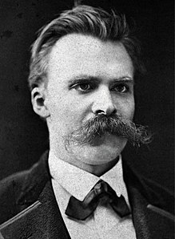

Friedrich Nietzsche
Friedrich Nietzsche is one of the most impactful 20th-early 21st century philosophers. He was the youngest man to hold the chair of Classical Philology at University fo Basel at the age of 24.
He has contributed to alot in the field of philosophy, and his most notable works are,
- Nihilism: Nihilism is essenitally the rejection of value and meaning. Nietzsche did not believe that one could get to nihilism simply by blaming everything on society or other people, because distress permits to a variety of different interpretations.
- Nietzsche belived that churches have failed to truly represent Jesus. He believed that religion put too much emphasis on a life after death, rather than the life one is currently living.
- Master/Slave morality: Master morality is an attitue of good and noble. The master is the one responsible for values. Master morality is a "yea-saying" attitude where "good" and "bad" are equivalent to "noble" and "despicable" respectively. The master creates value.Slave morality values kindness and sympathy. Master morality judges by good or bad consequences. Slave morality instead is based on good or evil intentions.
You can buy his books from Amazon here: Friedrich Nietzsche